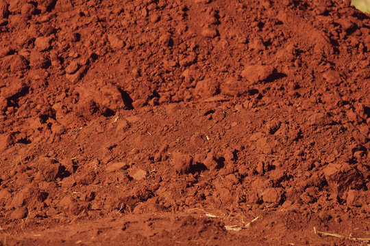

Red Soil(Omnibus Soil)

- Colour - Red.
- Often Fertile and Suitable for Agriculture
- The pH of red soil tends to be Slightly Acidic to Neutral.
- Red soil is characterized by its reddish appearance, which is due to the presence of Iron Oxides.
- Red soil is commonly found in Tropical and Sub-Tropical regions.
- Red soil retains enough moisture to support plant growth during dry periods.
- Red soil is conducive to the growth of crops like cotton, millets, peanuts, and pulses.
- It is typically a mixture of sand, silt, and clay, but with a higher proportion of iron content.